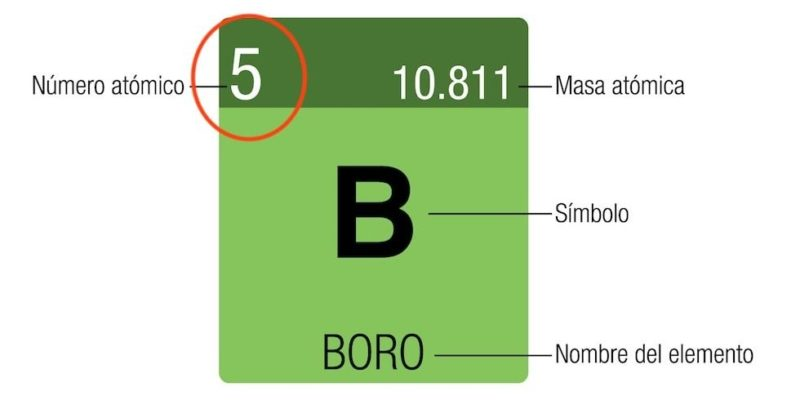

BORO
PANTALLA PRNCIPAL
El boro es un elemento quimico de la tabla periodica con el simbolo B y el numero atomico 5.
Ubicacion en la tabla
- Grupo: 13 (familia de los boroides o terreos)
- Periodo: 2
- Bloque: p
- Tipo de elemento: Metaloide
Usos comunes
- Vidrio y ceramica: Se usa en la fabricacion de vidrio de borosilicato.
- Industria: Se emplea en la produccion de fibra de vidrio, detergentes, ceramicas y aleaciones metalicas.
- Agricultura: Funciona como micronutriente esencial para el crecimiento de las plantas.

PANTALLA PRNCIPAL